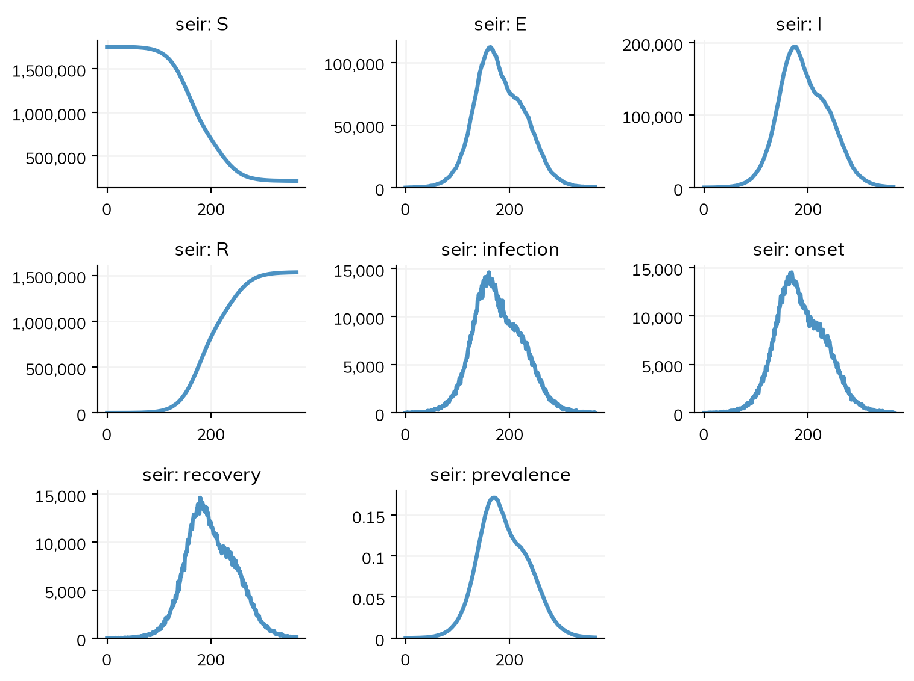

import geopandas as gpd
from shapely import Point
import math
nodes = []
nodeid = 0
nodes.append({"name": "Central City", "population": 1_000_000, "geometry": Point(0, 0).buffer(10_000), "nodeid": nodeid})
nodeid += 1
NTOWNS = 5
for i in range(NTOWNS):
angle = (i * 2 * math.pi / NTOWNS)
tx = 150_000 * (cos := math.cos(angle))
ty = 150_000 * (sin := math.sin(angle))
nodes.append({"name": f"Town {i+1}", "population": 100_000, "geometry": Point(tx, ty).buffer(10_000), "nodeid": nodeid})
nodeid += 1
ix1 = 50_000 * cos
iy1 = 50_000 * sin
nodes.append({"name": f"Interim {i+1}a", "population": 25_000, "geometry": Point(ix1, iy1).buffer(5_000), "nodeid": nodeid})
nodeid += 1
ix2 = 100_000 * cos
iy2 = 100_000 * sin
nodes.append({"name": f"Interim {i+1}b", "population": 25_000, "geometry": Point(ix2, iy2).buffer(5_000), "nodeid": nodeid})
nodeid += 1
scenario = gpd.GeoDataFrame(nodes, crs="EPSG:3857")
from laser.core import PropertySet
from laser.generic import Model
import laser.generic.SEIR as SEIR
from laser.core.distributions import normal
exp_mean = 7.0
exp_stddev = 1.0
inf_mean = 14.0
inf_stddev = 2.0
R0 = 2.0
beta = R0 / inf_mean
parameters = PropertySet({"nticks": 365, "beta": beta, "gravity_c": 2.5})
scenario["S"] = scenario.population
scenario["E"] = 0
scenario["I"] = 0
scenario["R"] = 0
scenario.loc[scenario.name == "Town 1", "S"] -= 100
scenario.loc[scenario.name == "Town 1", "I"] += 100
prj = scenario.to_crs(4326)
model = Model(prj, parameters)
incubation_distribution = normal(loc=exp_mean, scale=exp_stddev)
infectious_distribution = normal(loc=inf_mean, scale=inf_stddev)
model.components = [
SEIR.Susceptible(model),
SEIR.Recovered(model),
SEIR.Infectious(model, infectious_distribution, 1),
SEIR.Exposed(model, incubation_distribution, infectious_distribution, 1, 1),
SEIR.Transmission(model, incubation_distribution, 1)
]
model.run()LASER
This page is for people who build national agent-based models with LASER (laser-core, laser-generic, laser-measles): one agent per person, a GeoDataFrame of places, a list of components for each process, gravity coupling between places, and runs of tens of millions of agents on all of a workstation’s cores. It shows a LASER model next to the same model in Starsim, how their results agree, how long each takes, and what works and what does not yet, including what fails. Speed per agent at national scale is where Starsim is furthest behind today.
The same model in both
LASER’s hub-and-spoke example: an SEIR in a city of a million and fifteen smaller places on five spokes, coupled by a gravity model, with 100 infectious people in Town 1 at the start:
In Starsim, the places are a stratification with LASER’s gravity coupling of the force of infection, and each process is a transition. Here each of the 175,000 agents stands for ten people; LASER runs one agent per person:
import numpy as np
import starsim as ss
# The places: a city, and on each of five spokes two interim places and a town
angles = 2*np.pi*np.arange(5)/5
names = ['Central City'] + [f'Town {i+1}' for i in range(5)] + [f'Interim {i+1}{ab}' for i in range(5) for ab in 'AB']
pop = [1_000_000] + [100_000]*5 + [25_000]*10
dist = [0] + [150]*5 + [50, 100]*5 # Distance from the city, in km
angle = [0] + list(angles) + list(np.repeat(angles, 2))
places = ss.geo.geography(names=names, pop=pop, x=dist*np.cos(angle), y=dist*np.sin(angle))
S, E, I, R = ss.states('S E I R')
seir = ss.Disease(
infection = ss.Transition(S, E, rate=ss.perday(2/14) * I),
onset = ss.Transition(E, I, dur=ss.normal(7, 1, unit='days')),
recovery = ss.Transition(I, R, dur=ss.normal(14, 2, unit='days')),
init_n = dict(I=ss.by(patch=[0, 100] + [0]*14)), # 100 infectious people in Town 1
)
seir.stratify(patch=places, mobility=ss.geo.Mobility(ss.geo.gravity(c=2.5), kind='force', away=3/32))
sim = ss.Sim(seir, total_pop=sum(pop), n_agents=175_000, stop=ss.days(365), verbose=0)
sim.run()
sim.plot()Starsim kernels: Rust, OUT OF DATE (built before its source last changed, so results may be wrong): run "./build" in starsim/solvers/rust/
The same text runs as a stochastic compartmental model with sim.run(solver='binomial'), with no agents to build.
How the results agree
| Model | Agreement |
|---|---|
| The hub-and-spoke example (above) | Agree: 1,533,300 recovered at the end against LASER’s 1,532,298, and within 2% in each place shown; peaks within 4% in size (11% in the smallest place shown) and 7 days in time (one run of each) |
| England and Wales measles (53 places within 100 km of Norwich, 668,000 agents, 10 years, births, life-table deaths, importation, seasonality, a 40-stage latent period) | Agree: 104,092 infections over 10 years against 106,639 (means of 5 and 50 runs; four of the five Starsim runs are inside LASER’s 5% to 95% range); within 3.8% in each of seven places; 529,399 people at the end against 529,833 |
Timings
Lines are lines of model code (not counting blank lines, comments, imports, or plotting, and counting a line over 100 characters twice); times are for one run. Both are measured by Starsim’s north-star script, tests/north_star/north_star.py in the lingua_franca_design repo (see the index page). LASER’s times were recorded on the same machine, on all 20 cores; Starsim runs a sim on one core.
| Model | Lines: LASER | Lines: Starsim | One run: LASER | One run: Starsim | |
|---|---|---|---|---|---|
| The hub and spoke | 50 | 15 | 0.78 s for 1,750,000 agents (2.8 s the first time, with compiling) | 1.4 s for 175,000 agents (1.5 s the first time in a new process) | Pass, but with a tenth of the agents |
| England and Wales, 10 years | 126 | 62 | 3.0 s (4.7 s the first time) | 48 s (45 s the first time) | Fail (first run, repeated run) |
| England and Wales within 150 km of Norwich: 3.3 million agents in 149 places, 2 years | 2.75 s on 20 threads, 8.2 s on one; 466 MB | 67.8 s; 1,436 MB |
The last row was measured on 17 October 2026, on a machine shared with other jobs. At equal size on the hub and spoke (1.75 million agents), LASER took 1.67 s on 20 threads and 5.4 s on one, and Starsim 16.4 s; on 22 October 2026, after the work on speed, Starsim took 5.9 s on one thread, and on 25 October 2026 4.8 s on one thread and 2.2 s on 16, against LASER’s 4.0 s and 0.71 s (see the speed row below). The times in the table are from before that work.
What works and what does not yet
These are from Starsim’s switching demo for LASER users (tests/switching/test_laser.py in the lingua_franca_design repo), which compares speed and memory per agent with LASER’s, and from the review it was built from. “Fails” means the demo’s check does not pass today.
| Task | Today |
|---|---|
| Speed per agent-step | Works on 4 or more threads, fails on one: on the demo’s 149 places, from 1 to 3.3 million agents, 3.7 ns per agent-step on one thread, 1.8 to 1.9 on 4, 1.6 on 8, and 1.4 on 16 (25 October 2026, on a machine with a load of 2.5 to 5 from other jobs), against the demo’s target of 3.3 ns (three times LASER’s 1.1 ns on 20 threads). At the same thread counts, LASER’s own SEIR on the same places (without births) takes 1.7, 0.4, 0.4, and 0.23 ns, so it is 2.2 to 6 times faster; on the hub and spoke at LASER’s size (1.75 million agents, a year), LASER takes 3.9 to 4.1, 1.6, 1.2, and 0.71 s on 1, 4, 8, and 16 threads, and Starsim 4.8, 2.6 to 2.7, 2.4, and 2.2 s. The passes over the agents are threaded for a population of 200,000 or more; the rest of Starsim’s step is not, which is why it gains less from more threads |
| Memory per agent | Works: about 51 to 53 bytes per agent at the peak, against LASER’s 30 (the demo’s target is 55). A run of LASER’s full England and Wales (30 million agents) would need about 1.5 GB, against LASER’s 1.2 GB |
| Life-table deaths | Works: ss.death(lifetable=ss.lifetable(ages, deaths)), below; as agents each person’s age at death is drawn once, and in a compartmental run stratified by age it is a death rate for each age group |
| Seeding a fixed number of people on a schedule | Works: ss.Delivery(move=S >> I, capacity=3, interval=ss.days(30)), below |
| Radiation mobility, as well as gravity | Works: ss.geo.Mobility(ss.geo.radiation(), kind='force', away=...), with the same interface as ss.geo.gravity() and no parameters to choose |
| Gravity scaled to a mean share away, with a cap, as LASER scales it | Works: the matrix scaled in NumPy, as ss.geo.Mobility(matrix=..., kind='force'), below |
| Life tables and seeding, as agents and as compartments | Works: the same text (with an age stratification, for the life table as compartments) gives the same number of infections within 20% in one run of each |
| The national model as compartments | Works: LASER’s full England and Wales (954 places, 30.2 million people, a 40-stage latent period, with a constant death rate and importation as a rate) runs as a chain binomial in 12 s per simulated year |
| A campaign for children 9 months to 5 years in some regions | Works: one ss.vaccinate(...) with where=(ppl.age >= 0.75) & (ppl.age < 5) & measles.district.isin(names), which reached exactly those children |
| Fitting | Works: sim.fit(), with your own loss (gof=) if you have one; LASER has no fitting of its own |
Places and populations from shapefiles and rasters (laser-init) |
Works for shapes: ss.geo.geography(scenario) takes a GeoDataFrame, or a .shp, .geojson, or .gpkg file (with geopandas installed), with columns name and population (or pop), and puts each place at the centroid of its shape. Not yet for rasters: give the populations by hand |
The England and Wales model in miniature, with the life table, the seeding, and the gravity coupling declared: 20 places and 100,000 agents for a year:
rng = np.random.default_rng(1)
n = 20
w = 0.5 + rng.lognormal(0, 0.8, n)
pop = np.round(100_000*w/w.sum())
ages = np.arange(89)
pyramid = np.exp(-0.017*ages) # The stable age pyramid for births of 0.017 a year
places = ss.geo.geography(names=[f'p{i}' for i in range(n)], pop=pop, x=rng.uniform(0, 300, n), y=rng.uniform(0, 300, n))
S, E, I, R = ss.states('S E I R')
measles = ss.Disease(
infection = ss.Transition(S, E, rate=ss.perday(3.9) * I),
onset = ss.Transition(E, I, dur=ss.erlang(k=40, mean=ss.days(10))),
recovery = ss.Transition(I, R, dur=ss.normal(7, 2, unit='days')),
births = ss.birth(S, rate=ss.peryear(0.017)),
deaths = ss.death(lifetable=ss.lifetable(ages, 0.017*pyramid)), # How many of a cohort die at each age
init = dict(R=0.95),
init_n = dict(I=ss.by(patch=[3]*n)),
name = 'measles',
)
with np.errstate(divide='ignore'): # LASER's gravity, scaled so that the mean share exported is 4.5%, and at most 20%
M = pop[None, :]**0.25/places.distances**1.56
np.fill_diagonal(M, 0)
M *= 0.045/M.sum(axis=1).mean()
M *= np.minimum(1, 0.2/M.sum(axis=1))[:, None]
measles.stratify(patch=places, mobility=ss.geo.Mobility(matrix=M, kind='force'))
seeding = ss.Delivery(move=S >> I, capacity=3, interval=ss.days(30), name='seeding') # 3 people every 30 days
people = ss.People(int(pop.sum()), age_data=np.array([ages, pyramid]).T)
sim = ss.Sim(measles, people=people, interventions=seeding, unit='day', stop=365, verbose=0)
sim.run()
res = sim.results.measles
print('Infections:', round(res.infection.sum()))
print('Deaths:', round(res.deaths.sum()))
print('Seeded:', round(sim.results.seeding.delivered.sum()))Infections: 3274
Deaths: 4751
Seeded: 39Bringing your model in
There is no importer for LASER models, since a LASER model is Python code with components rather than a model file. The import-model skill for AI assistants (starsim_ai/import-model/references/laser.md in the Starsim repository) maps each LASER component to its Starsim form.
See Import/export for importing in general: checking an import, keeping it as code, and finishing one that is incomplete.
Reusing LASER’s own code
A LASER model can also be run inside Starsim as it is, keeping LASER’s arrays and calling its compiled kernels from a module written as code, as Tutorial G8 does for a model with code of its own. Starsim then gives the loop, the timeline, the results, and the rest of the sim (interventions, analyzers, other diseases). The kernels run at LASER’s own speed: the hub-and-spoke SEIR above ran within 2 to 6% of LASER at every thread count (measured 2026-10-25).
This code is not run when the docs are built, since it needs LASER installed:
import numpy as np
import numba as nb
import starsim as ss
from laser.core.distributions import normal
from laser.generic import components as lc
from laser.generic.shared import State
S, E, I, R = [s.value for s in (State.SUSCEPTIBLE, State.EXPOSED, State.INFECTIOUS, State.RECOVERED)]
class LaserSEIR(ss.Module):
""" LASER's SEIR components as one Starsim module: LASER's arrays and kernels, stepped once a day by Starsim """
def __init__(self, pop, network, beta=2/14, **kwargs):
super().__init__(name='laser_seir', **kwargs)
self.pop, self.network, self.beta = pop, network, beta
self.expdur = normal(loc=7.0, scale=1.0) # LASER's own distributions
self.infdur = normal(loc=14.0, scale=2.0)
def init_post(self):
super().init_post()
n = self.pop.sum()
self.state = np.full(n, S, dtype=np.int8) # One value a person, as LASER keeps them
self.etimer = np.zeros(n, dtype=np.uint16)
self.itimer = np.zeros(n, dtype=np.uint16)
self.nodeid = np.repeat(np.arange(len(self.pop), dtype=np.uint16), self.pop)
... # Seed some infections, and set up the counts by place (self.counts)
def step(self):
tick = self.ti - 1 # Starsim's first step is ti=1; LASER's first tick is 0
moved = lambda: np.zeros((nb.get_num_threads(), len(self.pop)), dtype=np.int32) # The moves by thread and place, which update the counts
lc.nb_timer_update(self.state, I, self.itimer, R, moved(), self.nodeid) # Recoveries
lc.nb_timer_update_timer_set(self.state, E, self.etimer, I, self.itimer, moved(), self.nodeid, self.infdur, 1, tick) # Onsets
ft = ... # The force of infection by place, from the counts and self.network, as LASER works it out
lc.TransmissionSE.nb_transmission_step(self.state, self.nodeid, ft, moved(), self.etimer, self.expdur, 1, tick) # Infections
sim = ss.Sim(modules=LaserSEIR(pop, network), unit='day', start=0, stop=365)What to know:
- LASER’s arrays are its own (an
int8state anduint16timers, one value a person), so the kernels act on arrays the module keeps, not on a declared disease’s states. Kept as Starsim states ofsim.peopleinstead (ss.Arr, passing.raw), the run was 24 to 37% slower, from the people’s own work each step. - LASER draws from Numba’s own generator, one stream a thread, so a run is reproducible only at the same number of threads, and its draws don’t share Starsim’s common random numbers.
- Importing
laser.genericalso imports its geography packages (geopandas, pyproj, shapely), even when only the kernels are used. - Starsim’s first step is
ti = 1(from time point 0 to 1), while LASER’s first tick is 0: getting this wrong gives no epidemic, silently.
Further reading
- LASER: website: the framework and its packages
- LASER: documentation for laser-generic: the generic disease models and their components
- laser-measles: repository: the measles models built on LASER